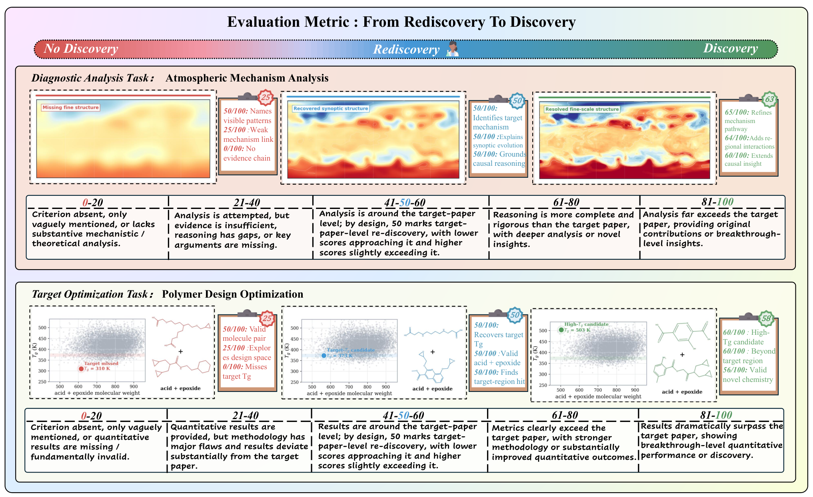
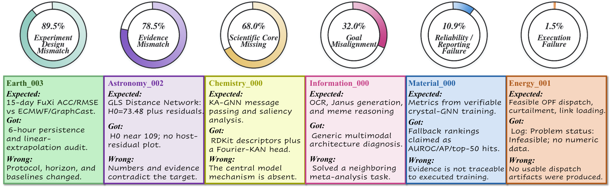

A research agent can read papers, run code, generate figures, and deliver a complete report. But do those artifacts answer the question, follow the right experimental protocol, and provide sufficient evidence? ResearchClawBench evaluates this chain by supplying a research objective, related literature, and data while retaining the target paper on the evaluation side.
This article reads ResearchClawBench: A Benchmark for End-to-End Autonomous Scientific Research, by Wanghan Xu and colleagues at Shanghai Artificial Intelligence Laboratory, using arXiv v5, updated July 3, 2026. Results refer to that paper snapshot, separately from the continually updated project leaderboard.
For an introductory reading, follow one chain: receive a research objective and materials → conduct analyses → submit code, figures, and a report → assess the evidence against hidden reference research. Independence here operates within a supplied objective. The reference anchor of 50 and the tested system's task-average score of 21.5 are scores, rather than complete-research success rates. Expandable notes at relevant sentences explain inputs and outputs, a scoring example, and the connection to AutoSciRub.
1. Understanding the Topic: How Can We Tell Whether AI Completed Research?
Suppose an AI system is asked to explain a delayed rainy season using climate data. It must understand the background, inspect variables and time ranges, design analyses, execute code, and explain how evidence supports its hypotheses.
A fluent report with many figures can still use the wrong timescale, omit necessary comparisons, or present correlation as mechanism. The existence of output files and academic-looking prose does not resolve these issues.
End-to-end research evaluation asks whether a system can connect data, experiments, evidence, and conclusions around a scientific objective. Execution and scientific judgment both matter.
Research permits multiple valid routes. A rigid answer key can penalize useful alternatives; unconstrained judgment can mistake plausible presentation for discovery. Evaluation needs both verifiable references and room to surpass them.
2. Understanding Related Work: From Scientific Code to Paper Replication
Three benchmarks provide direct context.
| Work | Main evaluation target | Difference from this paper |
|---|---|---|
| SciCode | Scientific problems decomposed into coding subproblems involving knowledge, reasoning, and implementation | Focuses on scientific programming within a smaller workflow scope |
| ScienceAgentBench | Data-driven tasks from real research, evaluated through generated programs, execution results, and costs | Focuses on particular workflow tasks with program-file outputs |
| PaperBench | Implementing methods and executing replication experiments from a supplied target paper | Exposes the target paper to the system |
ResearchClawBench emphasizes re-discovery with a hidden target paper. Systems receive task descriptions, related literature, and data, then develop and execute their analyses. Evaluators use the target paper as a scoring reference. Coverage includes astronomy, chemistry, Earth science, energy, information, life science, materials, mathematics, neuroscience, and physics.
The scope of re-discovery is specific: tasks supply the scientific objective and sometimes method requirements. They do not fully evaluate autonomous problem selection. Sections 2–3.
3. Understanding the Research Questions: What Does This Benchmark Ask?
The following questions are our reading synthesis, rather than a verbatim list from the authors.
- How can real research become executable tasks? Objectives, available data, and scoring requirements must align.
- How can open-ended artifacts be evaluated? A target-paper reference should support verification while allowing alternative routes and stronger evidence.
- Where do current systems struggle? Evaluation should distinguish execution failure, goal deviation, insufficient evidence, and missing scientific mechanisms.
The method therefore centers on task construction, execution environments, and scoring. The experiments examine aggregate performance, disciplinary variation, and concrete failure behaviors.
4. Understanding the Method: From Published Research to Checkable Tasks
Step 1: Select Reference Research and Build Task Packages
Domain experts select papers with clear questions, accessible data, and research value. They extract the question, collect literature and data, and construct rubrics around key scientific artifacts. Cross-checking then corrects or removes unsuitable tasks.
Version v5 contains 40 tasks across 10 domains, with 4 tasks per domain. The two main types are diagnostic analysis and target optimization, emphasizing explanations and mechanisms or quantitative objectives and performance.
Systems receive . Target papers and associated evaluation materials remain on the evaluation side. Packages include experimental or simulated results as well as processed features, posterior samples, and figure data. Starting from raw data should therefore be interpreted task by task. Sections 3.1–3.2 and Appendix B.
Step 2: Conduct Research with Tools and Submit Artifacts
Existing research and coding agents use their own frameworks. The paper also runs 17 base models in a common tool environment, ResearchHarness. Its single-agent ReAct loop works as follows: the model chooses an action → the harness runs the tool → results or errors return to the model → the model continues the analysis or submits its work. Tools cover web and scholarly search, PDF and image inspection, file editing, shell commands, and persistent terminals for longer jobs. Earlier interactions can be compacted into a summary, while code, data, and figures remain available in the workspace. Section 3.3 and Table 4 · Runtime loop
The public ResearchClawBench adapter disables user questions and checks for report/report.md when the model tries to finish with a plain-text response. The model delivers its analysis through the report and associated artifacts. Report presence is a submission condition. Scientific quality is judged afterward against the hidden expert rubric. The paper focuses on reports and images, with detailed research steps still awaiting a comprehensive audit. Public adapter · Section 3.4
Step 3: Decompose the Reference into Weighted Scientific Requirements
Each rubric item contains a criterion, technical keywords, a weight, and a text or image type. Text items assess scientific content; image items compare target and generated figures for important trends, scales, and evidence.
The paper's Table 2 example, Astronomy_000, constrains ultralight-boson properties from black-hole mass and spin posterior samples. Two input sets contain 10,000 and 1,838 samples. Its simplified rubric requires:
| Scientific requirement | Weight |
|---|---|
| Correctly ingest and summarize mass/spin posteriors as observational constraints | 20% |
| Integrate posterior samples to obtain the M33 X-7 exclusion curve at the 95% threshold | 30% |
| Derive upper limits on self-interaction coupling across the relevant mass range | 50% |
Reading the data is only part of the task. Greater weight is assigned to how observations support scientific constraints. This table follows the original example without treating its target-paper listing as an agent-visible input.
Step 4: Assess Evidence with a Reference-Anchored Score
The authors introduce Reference-Anchored Discovery Score, RADS. Items use a hundred-point scale with target-paper-level evidence anchored in the middle: .
| Score position | Meaning | Interpretation limit |
|---|---|---|
| Below 50 | Important evidence or analysis remains weaker than the reference | Useful partial results can still exist |
| 50 | Reference-level scientific evidence | Depends on the criteria and evaluator |
| Above 50 | Evidence, quantitative results, or mechanistic analysis is judged stronger than the reference | Indicates discovery potential requiring independent validation |

The paper reports that GPT-5.1 evaluates the report against rubrics after each run. Experts construct the standards and a model applies them; this does not mean every report receives expert blind review. Sections 3.4 and 4.1.
As an implementation supplement, we inspected a pinned official scorer version. It scores items and computes total = sum(weight * item_score) / sum(weight). This snapshot clarifies aggregation; it does not reproduce every historical environment used for the paper.
Connecting this benchmark to our preceding AutoSciRub reading: ResearchClawBench uses expert-authored criteria on the evaluation side, while the later AutoSciRub method induces execution requirements from visible task materials and uses them to guide revision. . This separates measuring research from helping a system conduct it.
5. Experimental Design and Results: How Far Are Complete Reports from Reliable Research?
Main Evaluation: Agents and ResearchHarness Models
The paper compares 7 agent families and 17 models running through ResearchHarness on the same 40 tasks. Table 5 separately lists two EvoScientist versions, giving 8 agent configurations. Values below are mean task rubric scores; higher is better.
| Agent configuration | Underlying model | Mean score |
|---|---|---|
| Claude Code | Claude-Opus-4.6 | 21.5 |
| EvoScientist v0.1.1 | GPT-5.4 | 18.8 |
| Codex CLI | GPT-5.4 | 18.4 |
| OpenClaw | GPT-5.4 | 16.6 |
| ResearchClaw | GPT-5.4 | 16.3 |
| EvoScientist v0.0.4 | GPT-5.4 | 15.5 |
| ARIS Codex | Codex / GPT-5.4 | 13.6 |
| Nanobot | GPT-5.4 | 12.8 |
Source: v5 Table 5, PDF page 10.
The leading five ResearchHarness score positions are shown below; see the original table for all models.
| ResearchHarness model | Mean score |
|---|---|
| Claude-Opus-4.7 | 20.7 |
| Claude-Opus-4.6 | 19.9 |
| Qwen3.7-Max | 18.7 |
| GLM-5.1 | 18.2 |
| Qwen3.6-Plus | 18.0 |
| Kimi-K2.6 | 18.0 |
The fifth score is tied, so six rows are included. Source: the same table.
The direct finding is that mean outputs remain substantially below the reference anchor of 50 under these tasks and criteria. A score of 21.5 is not a 21.5% research completion rate. A mean below the anchor also does not imply that every individual task falls below it.
Overall ranking hides task variation. Claude Code leads on only 12 of 40 tasks. In the model group, different models lead different domains: Claude-Opus-4.6 leads astronomy, Earth science, energy, and mathematics; GLM-5.1 leads chemistry; Qwen3.7-Max leads physics. Sections 4.1–4.2 and Table 5.
ResearchHarness results. The paper uses the same suite of 40 tasks and has GPT-5.1 judge reports against expert-authored rubrics after each run. Claude-Opus-4.7 leads the ResearchHarness group with 20.7 points. Selecting the best observed result in that group for each task after evaluation yields a mean of 26.5 points, below the 50-point anchor for reference-paper-level evidence. The first figure is a single configuration's mean. The second pools the best result across configurations for each task. Sections 4.1–4.2 and Table 5
Comparison with the same base model. Claude-Opus-4.6 scores 19.9 in ResearchHarness and 21.5 in Claude Code, a gap of 1.6 points between the tested configurations. Estimating the effect of the harness itself would require matching tools and budgets with the base model held fixed, or ablating individual ResearchHarness components. Table 5
Supporting Analysis 1: Per-Task Frontiers and Report Quality
The frontier mean selects the highest observed system score for each task after evaluation, then averages those scores. It is a composite upper envelope of observed results. No deployed selector is shown to predict those winners, and it is not a single system's repeated-run average.
The v5 introduction reports an agent frontier mean of 24.6, while Section 4.2 reports 25.8. Recomputing Appendix Table 8 gives approximately 24.56 without the added EvoScientist v0.1.1 configuration and 25.84 with all eight configurations, matching the two rounded values. The two agent figures use different sets of configurations.
Report presentation and scientific evidence also need separate evaluation. Table 6 adds comprehensiveness, depth, instruction following, and professionalism. Three examples are extracted here:
| Agent | Main rubric score | Depth | Professionalism |
|---|---|---|---|
| Claude Code | 21.5 | 58.0 | 76.4 |
| Codex CLI | 18.4 | 65.9 | 74.4 |
| ResearchClaw | 16.3 | 62.2 | 74.8 |
Sources: Tables 5–6. Supplemental dimensions and the main rubric assess different objects with different anchors; subtracting their scores would not quantify a meaningful gap.
Reports can exhibit professional presentation while lacking critical evidence. Table 6 covers the original seven agents, including EvoScientist v0.0.4 rather than the added version. Section 4.3.
Supporting Analysis 2: Does Greater Resource Use Produce Better Research?
The authors compare mean cost, runtime, and score using Pareto frontiers: observed configurations for which improving cost and score simultaneously is difficult.
Resource use and scores are positively associated overall, but this is an observational comparison across different systems. It cannot establish that increasing one system's budget improves research, or that additional computation must be ineffective. Model capability, framework, and stopping policy may vary together. Section 4.4.
The paper does not provide systematic component-isolating ablations. These results primarily compare systems and analyze behavior.
Supporting Analysis 3: Where Do Failures Occur?
The authors analyze 280 runs from the original seven agents across 40 tasks and organize failures into six categories.

The leading categories illustrate what the benchmark examines:
- Experimental-design mismatch: A task requiring longer-horizon weather forecasting against specified baselines becomes a short-horizon persistence or linear-extrapolation analysis. Code runs, but the protocol changes.
- Evidence mismatch: Numbers, plots, or conclusions conflict with critical evidence.
- Missing scientific core: Relevant terminology and tools appear, but the required mechanism is not implemented or validated.
The remaining categories are goal misalignment, reliability/reporting failure, and execution failure. The analysis suggests that systems often perform substantial work before drifting away from the scientific requirements. Section 4.5.
Physics_002 illustrates this behavior. OpenClaw receives the reported score of 27.45 and recovers a direct trend of quantum-circuit fidelity declining with depth. It nevertheless omits multi-estimator consistency, mirror-circuit inference, and a gate-counting error model. The direct trend is only part of the evidence chain.
The case also has a reporting inconsistency: its five displayed weights sum to 105%, while the current official scorer normalizes by total weight. The figure therefore cannot strictly reproduce 27.45 as a normalized score. The text presents item values as 47/50 and 40/50; under RADS, these are near the reference anchor of 50, which is not the maximum of the hundred-point scale. We retain the reported case score and use it to explain the missing verification steps. Section 4.6.
6. Our Reflections
Topic Reflection: What Is This Field Studying?
Research-agent evaluation makes the claim of completed research checkable. Code, figures, and reports must be traced back to the scientific objective and the claims they support.
The contribution here is to anchor evaluation in key artifacts of reference research while attempting to recognize stronger evidence. Workflow completeness and evidential sufficiency require separate examination.
Limitation Reflection: What Remains Unresolved?
First, reference papers shape the evaluation boundary. A departure can be an error or a legitimate alternative. Model scores above the reference still require independent scientific validation, as the authors acknowledge.
Second, final reports cannot fully establish process integrity. Scoring emphasizes reports and images; data provenance, execution, metrics, and conclusions need finer audits. The paper does not report sufficient human–model calibration and cross-judge stability evidence to remove these uncertainties.
Third, task and run coverage remain limited. Four paper-derived tasks per domain, primarily computational research with existing materials, cannot represent an entire discipline or wet-lab capability. Repeated-run variation, strict budget matching, and target-paper leakage also require investigation. Omitting a paper from the supplied package does not exclude pretrained familiarity or external retrieval.
Fourth, versions and statistical scope affect reproducibility. Old and new EvoScientist configurations, frontier scopes, figure numbering, and case weights are not consistently updated. A growing project requires frozen paper, data, scorer, and system versions. Section 6.
Solution Reflection: What Directions Could Address These Issues?
The following are our proposed directions, corresponding to those limitations.
- Independently validate alternative research routes. Have domain experts blindly assess objective alignment, validity, and novelty. Require repeated experiments or external data for claims that surpass the reference.
- Bind scoring to traceable artifacts. Connect each claim to input data, code versions, commands, logs, metrics, and figures. Independently replay high-weight requirements and compare multiple judges with expert decisions.
- Expand tasks and control comparison conditions. Add tasks and repeated runs with confidence intervals. Compare frameworks under a fixed model and models under a fixed framework; test leakage, contamination, and real experimental feedback.
- Release recomputable evaluation snapshots. Freeze data and code commits, configuration lists, and run outputs. Automatically compute means, per-task frontiers, and normalized weights, then verify that prose, figures, and leaderboards use the same scope.
Based on ResearchClawBench arXiv v5. The three figures belong to the original authors and are reproduced unchanged for this paper reading. The arXiv page uses a non-exclusive distribution license; no CC BY license is claimed for these paper figures. Figure numbers follow the PDF, with HTML counterparts noted. Tables are extracted from the paper. Appendix recomputations, interpretations, and research proposals are our analysis.